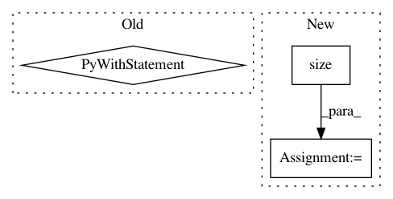

c63cc933782e2de32c9fe74c18b337b2bbe0f242,test/examples/test_kissgp_variational_regression.py,TestKissGPVariationalRegression,test_kissgp_gp_mean_abs_error,#TestKissGPVariationalRegression#,61
Before Change
gp_model.train()
likelihood.train()
with gpytorch.beta_features.diagonal_correction():
optimizer = optim.SGD(list(gp_model.parameters()) + list(likelihood.parameters()), lr=0.001)
scheduler = optim.lr_scheduler.MultiStepLR(optimizer, milestones=[15], gamma=0.1)
for _ in range(20):
scheduler.step()
batchnum = 0
for x_batch, y_batch in loader:
batchnum += 1
x_batch = Variable(x_batch.float())
y_batch = Variable(y_batch.float())
optimizer.zero_grad()
output = gp_model(x_batch)
loss = -mll(output, y_batch)
loss.backward()
for name, param in gp_model.named_parameters():
print("minibatch {} grad norm".format(batchnum), name, param.grad.norm())
optimizer.step()
for name, param in gp_model.named_parameters():
print(name, param.grad.norm())
self.assertTrue(param.grad is not None)
self.assertGreater(param.grad.norm().item(), 0)
for param in likelihood.parameters():
self.assertTrue(param.grad is not None)
self.assertGreater(param.grad.norm().item(), 0)
optimizer.step()
// Test the model
gp_model.eval()
likelihood.eval()
test_preds = likelihood(gp_model(Variable(test_x))).mean()
mean_abs_error = torch.mean(torch.abs(Variable(test_y) - test_preds))
self.assertLess(mean_abs_error.data.squeeze().item(), 0.1)
if __name__ == "__main__":
After Change
// Our loss object
// We"re using the VariationalMarginalLogLikelihood object
mll = gpytorch.mlls.VariationalMarginalLogLikelihood(likelihood, model, n_data=train_y.size(0))
// The training loop
def train():
for i in range(n_iter):
In pattern: SUPERPATTERN
Frequency: 4
Non-data size: 3
Instances
Project Name: cornellius-gp/gpytorch
Commit Name: c63cc933782e2de32c9fe74c18b337b2bbe0f242
Time: 2018-07-19
Author: jrg365@cornell.edu
File Name: test/examples/test_kissgp_variational_regression.py
Class Name: TestKissGPVariationalRegression
Method Name: test_kissgp_gp_mean_abs_error
Project Name: allenai/allennlp
Commit Name: a2878a883280dc0525b57ae800d7b3c719f6046c
Time: 2017-10-21
Author: mattg@allenai.org
File Name: allennlp/models/encoder_decoders/simple_seq2seq.py
Class Name: SimpleSeq2Seq
Method Name: forward
Project Name: rwth-i6/returnn
Commit Name: a8954bb1295f947a21eee85adf563e668a161322
Time: 2021-03-27
Author: albzey@gmail.com
File Name: returnn/tf/util/basic.py
Class Name:
Method Name: select_src_beams
Project Name: NVIDIA/flownet2-pytorch
Commit Name: dafdc9b5cb8fa4c65285aad22b1429549d06d71a
Time: 2018-02-04
Author: chenkaidev@gmail.com
File Name: networks/correlation_package/functions/correlation.py
Class Name: CorrelationFunction
Method Name: forward